Aufgabe 92

Wie löse ich Matheaufgaben?
Potenzen, Wurzeln, Logarithmen
Aufgabe 92
Aufgabe 93 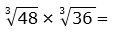
Aufgabe 94 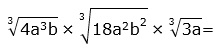
Aufgabe 95 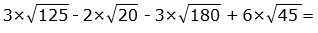 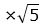
Aufgabe 96

Aufgabe 97 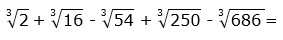

Aufgabe 98

Aufgabe 99

Aufgabe 100 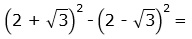
Aufgabe 101 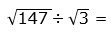
Aufgabe 102

Aufgabe 103

Aufgabe 104

Aufgabe 105
x +
Aufgabe 106 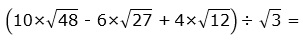
Aufgabe 107

Aufgabe 107 Wie groß ist die Querschnittsfläche A einer achteckigen Säule mit einer Seitenlänge von 1,75 m?
Aufgabe 108 Wie groß ist der Umkreisradius r einer zwölfeckigen Säule mit einer Querschnittsfläche von 62,5 m²? r = m
Aufgabe 109 Auf einen Turm ist ein Dach in der Form einer regelmäßigen sechseckigen Pyramide mit einer Grundseite von 2,8 m aufgesetzt. Ihre Seitenflächen sind unter 68° geneigt. Wie groß sind das Volumen V des Daches und die Länge s einer Seitenkante?
Aufgabe 110 Zwei Kräfte P1 = 24,5 N und P2 = 17,8 N stehen senkrecht aufeinander. Wie groß ist die Resultierende R und ihr Richtungswinkel α zu P1? α = °
Aufgabe 111 Die Kraft R = 74,2 N soll so in 2 Teilkräfte zerlegt werden, dass R einen Winkel von 37,5° zu einer der senkrecht aufeinander stehenden Teilkräfte bildet. Wie groß sind die Teilkräfte?
Aufgabe 112 Ein Schiff wird vom Ufer aus mit einer Kraft von 3750 N unter einem Winkel von 15° gezogen. Wie groß ist die Kraft K, die das Schiff vorwärts bewegt? K = N
Aufgabe 113 Wie groß ist die vorwärtstreibende Kraft T der Windkraft W für das Segelboot? 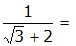
Aufgabe 114 Ein Fluss ist 120 m breit und hat eine Strömungsgeschwindigkeit von 0,25 m/s. Ein Schwimmer möchte ihn so durchschwimmen, dass er am gegenüberliegenden Uferpunkt ankommt. Er schafft 100 m in 2 Minuten und 40 Sekunden in stehendem Wasser. Welchen Richtungswinkel α muss er einhalten? Welche Zeit t in s braucht er für die Durchquerung? t = s
Aufgabe 115 Betrachtet man aus einem fahrenden Zug, der 100 m in 12 Sekunden zurücklegt, Regentropfen, so scheinen die unter einem Winkel von 70° zur Senkrechten zu fallen. Welche Geschwindigkeit v haben die Tropfen?
Aufgabe 116 Von einem Punkt aus, der 75 m über dem Wasserspiegel eines Sees liegt, erscheint eine Wolke unter dem Erhebungswinkel 62,7°. Ihr Spiegelbild unter dem Tiefenwinkel 67,3°. Wie hoch steht die Wolke? Sie steht m hoch.
Aufgabe 117 Wie groß ist der Radius r des Breitenkreises, der zur geographischen Breite von 49,4° (Heidelberg ) gehört, wenn der Erdradius = 6 370 km beträgt?
Aufgabe 118 Hamburg liegt auf dem 53,5 ten Breitengrad. Berechnen Sie die Länge l des dazu gehörigen Breitenkreises, die Geschwindigkeit v von Hamburg durch die Erddrehung und die Länge b einer Winkelminute auf dem Breitenkreis. Erdradius = 6 370 km. l = km
Aufgabe 119 Die Antenne auf einem Funkhaus ist 10 m hoch und unter einem Sehwinkel von 10° zu erkennen. Um die Antennenspitze zu sehen, muss ein Beobachter seinen Blick um 30° heben (Augenhöhe vernachlässigt). Berechnen Sie die Entfernung e des Beobachters vom Turm und die Turmhöhe h.
Aufgabe 120 Wie breit ist der Fluss? 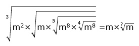 Er ist = m breit.
Aufgabe 121 Wie groß ist der Abstand e des Schiffes nach den angegebenen Peilungen vom Leuchtturm? 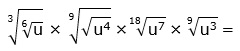
Aufgabe 122 In einem Kanalrohr mit einem Durchmesser von 1 m und einer Länge von 6 m steht Wasser 80 cm hoch. Wie groß ist die Fläche A, die von Wasser benetzt ist? A = m²
Aufgabe 123 Die Bahnstrecke hat die Form eines Kreisbogens. Wie groß ist der davon überstrichene Winkel α? 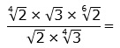
Aufgabe 124 Welche Masse m hat das dargestellte 8 m lange Kellergewölbe mit einer Dichte von 2,25 kg/dm³?
m = kg
Aufgabe 125 Ein unter 28°30' verlaufender Stollen in einem Steinkohlebergwerk wird senkrecht angebohrt. Seine scheinbare Höhe beträgt 2,8 m. Wie hoch ist seine wirkliche Höhe h?
Aufgabe 126 Der Mittelpunkt des Zifferblattes einer Turmuhr befindet sich in einer Höhe von 60 m. Von einem Punkt am Boden aus erscheint er unter einem Erhebungswinkel von 42°10', der untere Rand des Zifferblattes unter einem Winkel von 41°10'. Wie groß ist der Durchmesser d des Zifferblattes? d = m
Aufgabe 127 Wie groß sind die Dachwinkel α und β?

Aufgabe 128 Wie hoch ist das Dach, und wie lang sind die Sparren, wenn sie 40 cm überstehen?
l = m
Aufgabe 129 Wie hoch steht eine Wolke, wenn sie senkrecht angestrahlt und aus einer Entfernung von 1500 m mit einem Erhebungswinkel von 47,6° angepeilt wird?
Aufgabe 130 Auf einer Flussinsel befindet sich ein Gebäude. Wie groß ist seine Entfernung e vom Ufer, wenn ein Vermesser am Ufer eine 40 m lange Standlinie abgesteckt und von deren Eckpunkten das Gebäude unter 62° und 51° angepeilt hat? e = m
Aufgabe 131 Ein Flugzeug befindet sich in einer Höhe von 32 m über einem Fluss. Welche Breite b hat der Fluss, wenn seine Ufer vom Flugzeug aus unter den Tiefenwinkeln 25,5° und 60,7° angepeilt werden?
Aufgabe 132 Eine Straße hat eine Querneigung von 2,5%, damit Regenwasser besser abfließen kann. Um wie viel mm ist sie bei einer Breite von 6,5 m am Rand angestiegen? Es sind mm
zurück